CASE SPECIFIC
MEAL PREP
Author: Mike Pernice, Founder · Last updated: April 2026
Case Specific Meal Prep is a Pittsburgh-based meal prep and catering company owned by Vince, with Chef Dom creating personalized, healthy dishes. The Stoop managed their organic social media presence for one year — producing content, managing themed weekly series, designing catering menus, and coordinating influencer kitchen collaborations.
The Challenge
Case Specific Meal Prep had a strong product — personalized, healthy meals made by Chef Dom — but needed a consistent social media presence to build awareness, drive orders, and establish credibility in Pittsburgh's competitive meal prep market. They needed content that showcased the food, told the brand story, and engaged the local community.
From the Kitchen
Brand Identity
Catering Menus
Spotlight Series
Our Approach
- Monthly content calendar with themed weekly series across Instagram
- Chef's Choice series — step-by-step dish creation with Chef Dom
- Ingredient Spotlight — nutritional information on ingredients used
- CSMP Spotlight — featuring vendors, staff, and community partners
- Influencer in the Kitchen — local influencers invited for 1-hour shoots, creating content in exchange for free meals and posting about the food
- Client Testimonial posts promoting customer feedback
- Vendor Spotlight — showcasing ingredient sourcing and local suppliers
- Healthy Tip series — turning unhealthy meals into healthy alternatives
- Catering menu design — breakfast, lunch/dinner, and in-flight menus
- Daily interactive story posts (reminders, engagement questions)
The Results
Over a one-year engagement, The Stoop delivered 15,000+ combined impact across Instagram — producing consistent, professional content that showcased Chef Dom's dishes and built Case Specific Meal Prep's brand presence. The themed content series — Chef's Choice, Ingredient Spotlight, and Influencer in the Kitchen — gave the brand a recognizable content format that audiences engaged with weekly. The catering menu designs expanded CSMP's service offerings into corporate catering, and the influencer collaborations brought new audiences through authentic kitchen content.
Have a food brand ready to grow?
Let's cook up something great together.